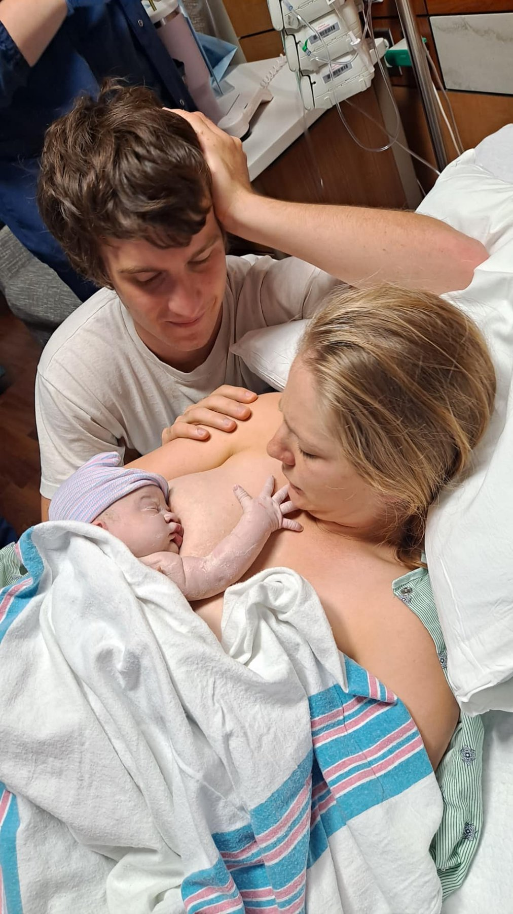
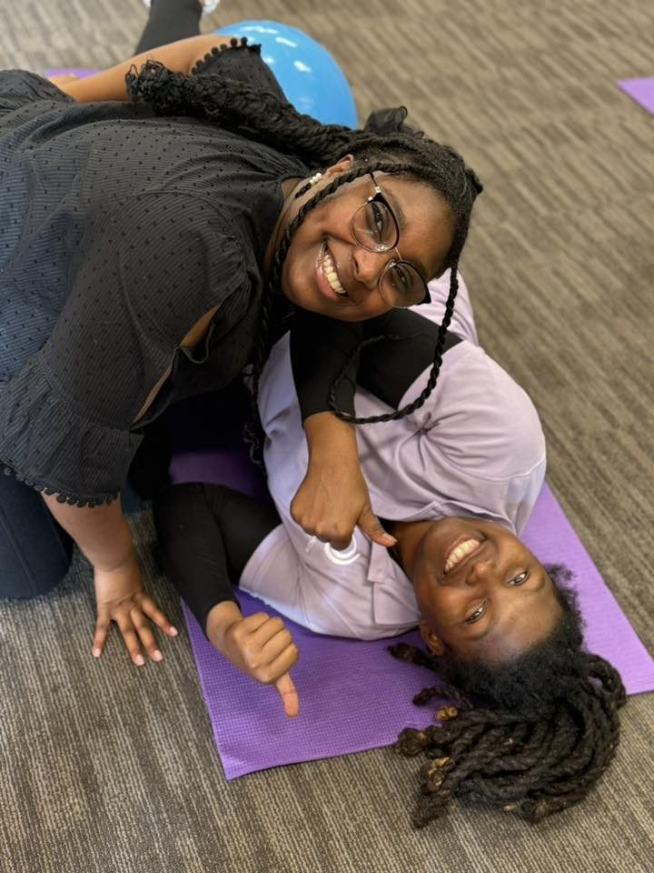
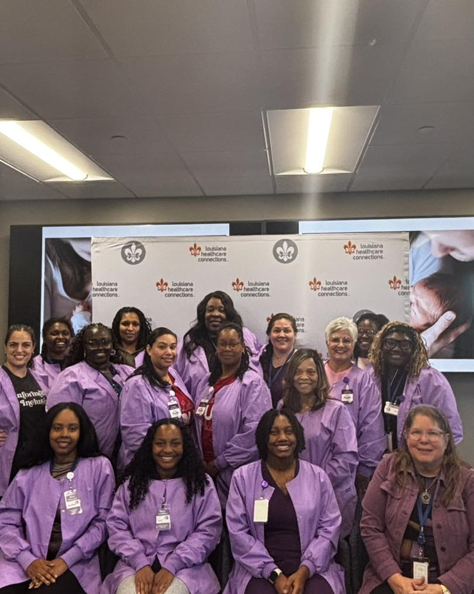
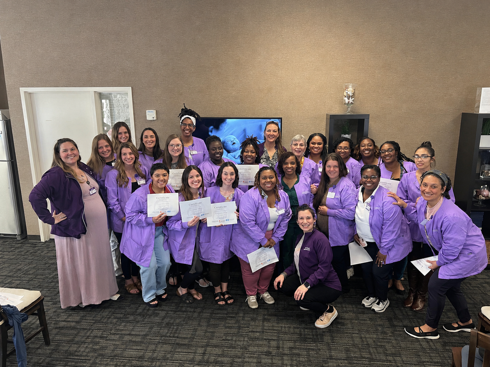
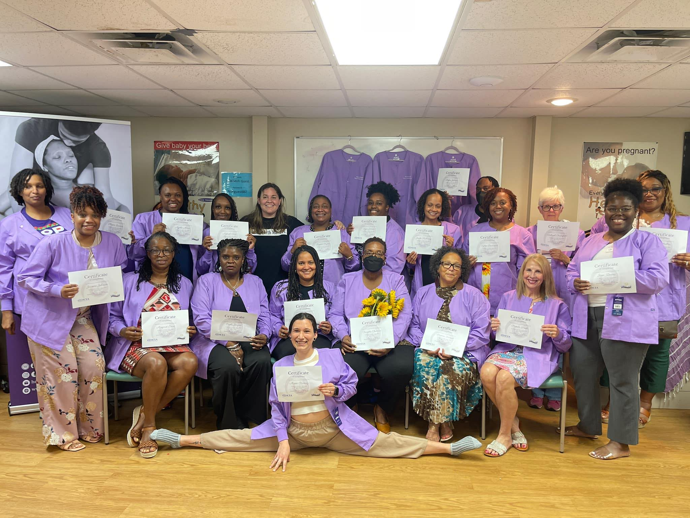
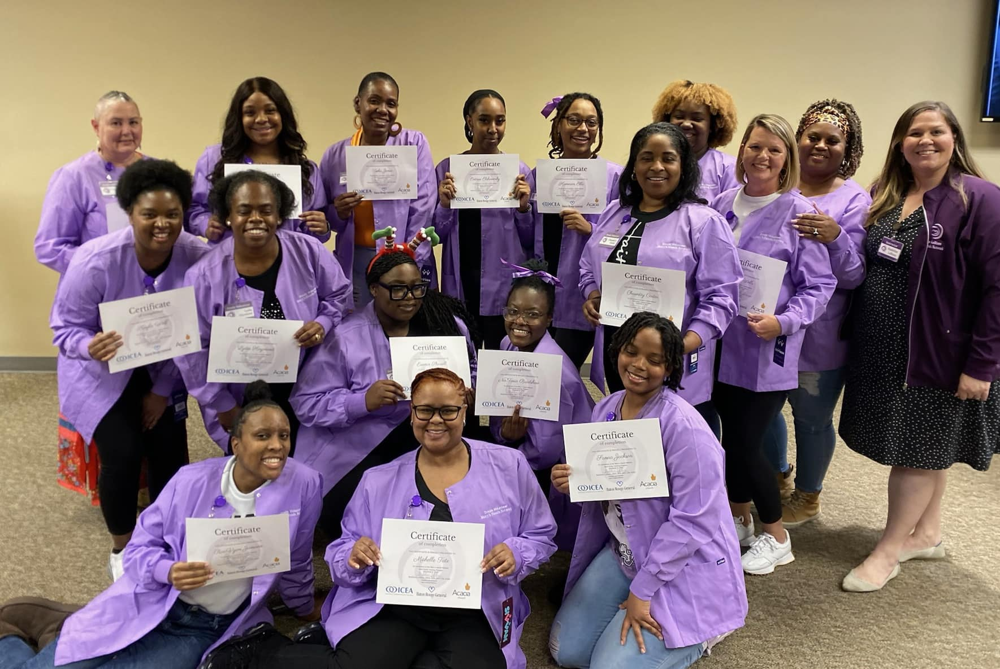
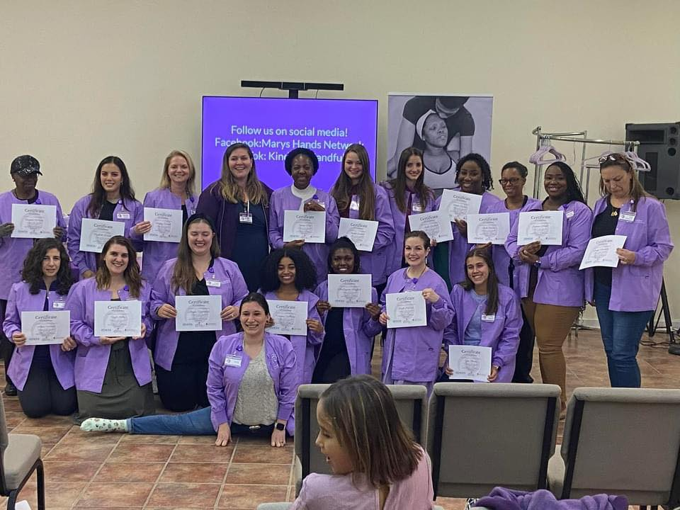
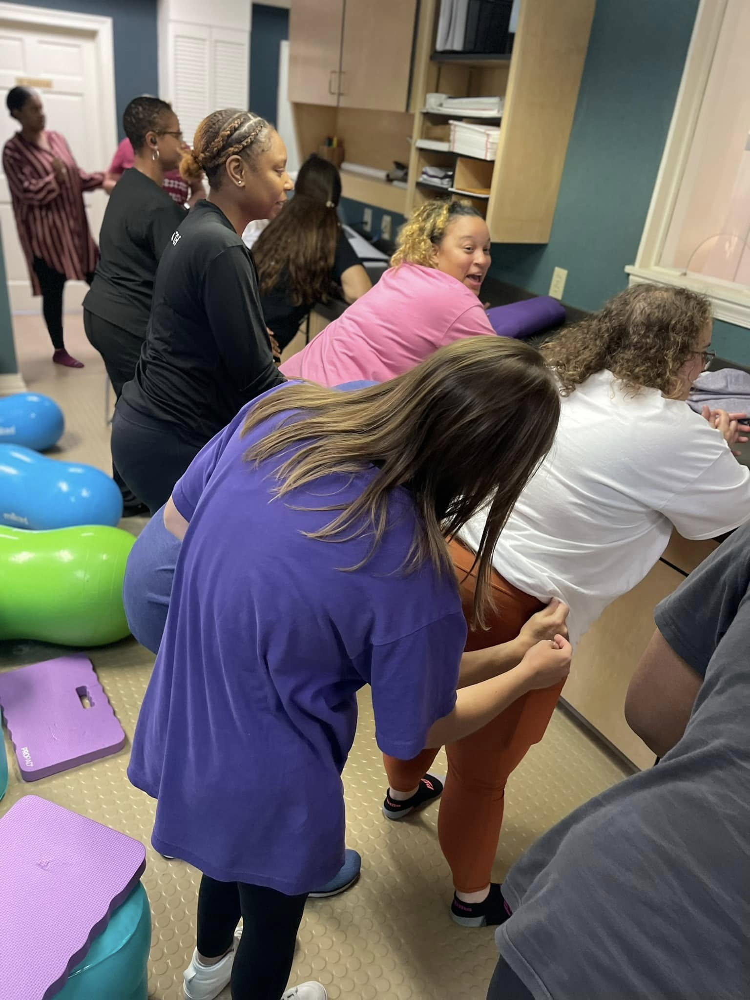
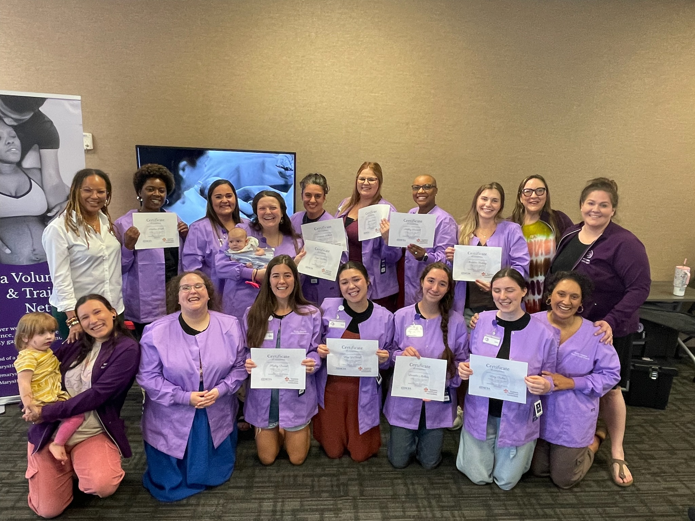
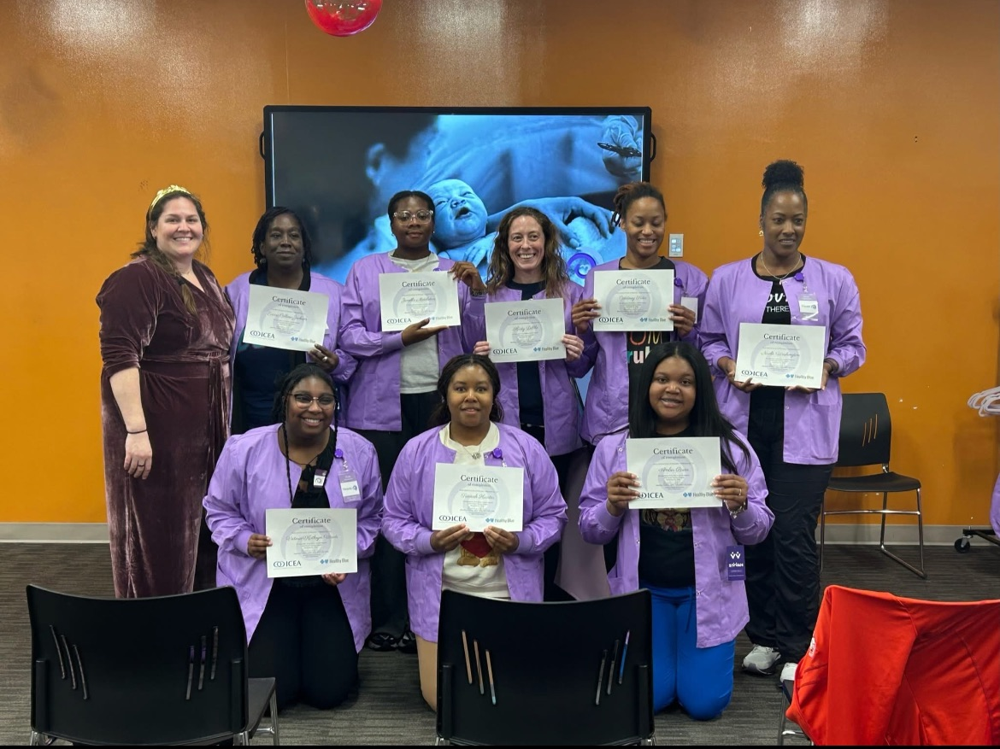

Familias
Solicita una doula voluntaria gratuita que te acompañe durante el trabajo de parto, el nacimiento y las primeras ocho semanas posparto. La solicitud toma 15 minutos.
Comienza tu solicitudSalud materna con raíces en Louisiana · Desde 2023
Nuestra misión es empoderar a las familias, promover la excelencia en el parto y cerrar la brecha de equidad en salud en nuestra comunidad.

Solicita una doula voluntaria gratuita que te acompañe durante el trabajo de parto, el nacimiento y las primeras ocho semanas posparto. La solicitud toma 15 minutos.
Comienza tu solicitudÚnete a la red de doulas voluntarias más grande de Louisiana y ayuda a cambiar los resultados de salud materna en tu comunidad. Solicita ahora para unirte a nuestra próxima cohorte certificada por ICEA.
Solicita unirte a la red$50 financian un kit de parto. $950 financian un cupo de capacitación. Cada donación es deducible de impuestos y se destina a un rubro específico que podemos mostrarte.
Conoce cómo donarUna doula es una persona de apoyo no clínico que permanece a tu lado durante el parto y los días siguientes. Las doulas no reemplazan a las enfermeras, parteras ni médicos. Acompañan al equipo médico y se aseguran de que tengas una mano firme, una voz familiar y respuestas a tus preguntas cuando las necesites.
Para las familias atendidas por Mary’s Hands Network, nuestros resultados registrados por el IRB muestran una reducción del 65% en la tasa de cesáreas y una reducción del 84% en los partos prematuros en comparación con los promedios del estado de Louisiana. El apoyo de doula continuo y culturalmente humilde es una de las intervenciones con más respaldo en la salud materna, y creemos que debe ser gratuito para cualquier familia que lo desee.
En términos más amplios, se ha demostrado que el apoyo de doula continuo reduce las cesáreas, disminuye las tasas de parto prematuro, aumenta el inicio de la lactancia y mejora la experiencia general del parto. La evidencia a favor del cuidado de doula es de las más sólidas en la salud materna.
Construida una cohorte, una familia, un nacimiento a la vez.

Cuidado de doula gratuito, educación y encuentros comunitarios para las familias que atendemos.

Capacitamos a las trabajadoras del parto que sirven a nuestras comunidades, según los estándares de ICEA y MHN.

En eventos comunitarios, en espacios de políticas públicas y en los datos de resultados.
Cada doula de nuestra red se capacita junto a su cohorte y luego se certifica para servir a las familias de Louisiana.
















Los hospitales, fundaciones y organizaciones de todo el estado que hacen posible nuestro trabajo.
Cada visita de doula, cada cohorte de capacitación y cada kit de parto se financia con donantes como tú. $50 financian un kit de parto. $950 financian un cupo de capacitación. Deducible de impuestos en la máxima medida que permite la ley.